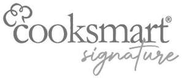

Trade Mark Journal No.2025/033 15 August 2025
UK00004242455 31 July 2025 (11,21)

- Class 11
- Broiling pans; Warming pans; Electric pans; Frying pans, electric; Warming pans, non-electric; Griddles [electric cooking utensils].
- Class 21
- Pots; Cooking pots; Cookware [pots and pans]; Cooking pots [non-electric]; Cooking pots, non-electric / Non-electric cooking pots; Mixing spoons [kitchen utensils]; Kitchen containers; Cooking pans; Glass pans; Frying pans; Pans (Frying -); Cake pans; Muffin pans; Roasting pans; Roaster pans; Butter pans; Pie pans; Dripping pans; Metal pans; Stir-fry pans; Pancake frying pans; Shallow pans for cooking; Frying pans [non-electric]; Non-electric frying pans; Milk pans; Cooking pots and pans [non-electric]; Non-electric cooking pots and pans; Egg frying pans; Frying pan lids; Portable pots and pans for camping; Cooking pans [non-electric]; Non-electric cooking pans; Chip pans (Non-electric -); Swedish pancake pans; Pan scrapers; Metal pans for cattle; Grill pans made of precious stone; Skillets; Baking utensils; Spatulas [kitchen utensils]; Griddles [cooking utensils]; Saucepans; Cookware; Cookware, except forks, knives and spoons; Baking tins; Spatulas; Cookware and tableware, except forks, knives and spoons; Cooking pots for use in microwave ovens; Bakeware; Cookware for use in microwave ovens; Ramekins; Roasting tins; Silicone muffin baking liners; Non-electric griddles [cooking utensils]; Griddles [non-electric cooking utensils]; Cake tins; Cake trays; Simmer rings [cooking utensils]; Baking trays made of aluminium; Basting spoons [cooking utensils]; Grills [cooking utensils]; Oven to table racks; Tableware, cookware and containers; Cutlery trays; Saucepans (Earthenware -); Kitchen utensils of silicon; Muffin tins; Trivets [table utensils]; Aluminium cookware; Cooking pot sets; Aluminium bakeware; Pot lids; Tableware, except forks, knives and spoons; Baking dishes; Pie tins; Cupcake baking cups; Silicone baking cups; Kitchen utensils.
Citylook imports ltd